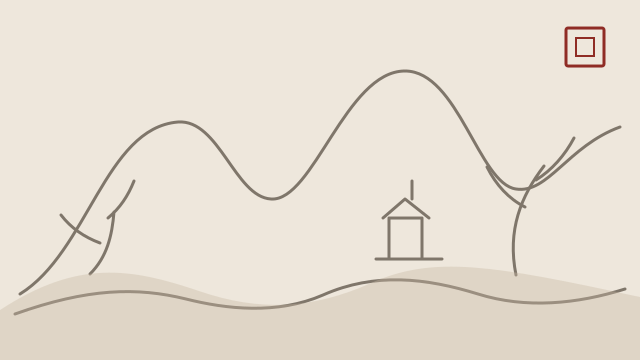
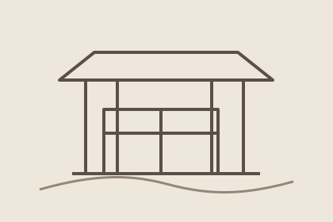

HOW TO SEE
この時代をどう見るか
名称や年代を暗記するだけでなく、絵画の役割、見る人、制作環境の変化を一緒に見ると理解が深まります。
絵画の見方
構図・筆墨・余白から、その時代の特色を読みます。

文化的背景
宮廷、文人、宗教、市場など、絵画を生んだ社会を知ります。

後世への影響
次の時代や日本美術への影響も、必要に応じて紹介します。
ARTISTS
代表的な画家
画家名は日本語で一般的な旧字体・慣用表記を中心に整理しています。生没年・帰属に議論がある場合は断定を避けます。
COLLECTION
Retro日和の関連作品
現在、この時代に関連づけて掲載している販売作品はありません。知識ページは商品在庫とは独立して継続公開します。